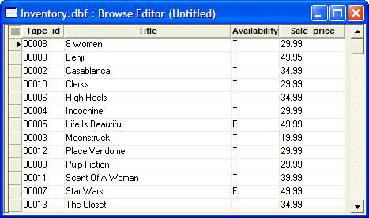

Customizing Browses
Browses and forms are layouts you use to enter, edit, and view data. You can customize browses and forms to make data entry easier, to improve readability, and create calculated fields.
In this lesson, you learn how to design and use custom browses. You will learn how to create and use forms in the next lesson.
Contents
Layouts are the primary means by which you enter, view, and output data in Alpha Anywhere. Alpha Anywhere has five types of layouts: Forms, Browses, Reports, Letters, and Labels. In this tutorial lesson, you work with browses.
Each type of layout has its own Design Editor that you access in Design Mode. In Design Mode, you create and arrange the layout contents. Design Mode lets you construct layouts to display database information. You switch from Design Mode to View Mode. View Mode lets you view and work with the database information, using the layouts you created in Design Mode.
Creating Layouts
When creating a new layout, you can copy the design of an existing layout, create one from scratch, or edit the Default Browse or Default Form. Use the following general procedure for creating new layouts.
To create a new layout:
In the Control Panel, click the Forms or Browses tab, corresponding to the type of layout you want to create.
Click the New button in the Control Panel. Alpha Anywhere opens a Genie to guide you through creating the new layout.
To copy an existing layout:
In the Control Panel, right-click the layout you want to copy.
From the right-click menu, select Duplicate. Alpha Anywhere prompts you to name the new copy.
Give the layout a name, and click OK to save.
Switching between Design Mode and View Mode
To switch to Design Mode:
While working in a layout, click the  Design
Mode button on the toolbar.
Design
Mode button on the toolbar.
In the Control Panel, select the layout, and click the
 button .
button .In the Control Panel, right-click the layout, and select Design from the right-click menu.
To switch from Design Mode to View Mode:
While in the Form Designer, click the
 Form View
button.
Form View
button.While in the Browse Designer, click the
 Browse View
button.
Browse View
button.
In the following procedures, you look at the Browses in AlphaSports, and create a custom browse for AlphaMovies.
A browse displays table and set data as a single table. You can view this tabular display using the Default Browse or a custom browse that you define. While viewing a browse, you can modify resize and move columns. However, appearance modifications remain only as long as the browse window is open; once you close the browse window, Alpha Anywhere restores the default settings.
However, you can create and save custom browses in which you rearrange, and reformat columns. A custom browse retains its saved settings when re-displayed.
Looking at AlphaSports Browses
AlphaSports has four saved browses. Use the following procedure to view the records in each browse.
To view an AlphaSports custom browse:
Open the AlphaSports database.
In the Control Panel display the Browses tab.
Double-click a browse to view the records.
Compare the Customer table Default Browse to the CustomerBrowse. You see that the CustomerBrowse presents a subset of the table data, useful for quick access to customer contact information.
In the following procedure, you create a browse with some special features for AlphaMovies.
When creating a new browse, you can either copy the design of an existing Browse or create one from scratch. In the following procedure, you use the New Browse Genie to create a browse for AlphaMovies.
 Note : You should
have already created the AlphaMovies database
in the Creating a Database lesson.
Note : You should
have already created the AlphaMovies database
in the Creating a Database lesson.
To create a new browse:
Open the AlphaMovies Control Panel.
Click the Browses tab, and click the New button. The New Browse window appears.
Select the "Inventory" table, and click Next. The New Browse window displays the fields in the selected table.
From the Available Fields pane, you select fields to include in the new browse. You can select the fields one at a time, or all at once, using the navigation buttons located between the windows.
|
Button |
Action |
|
|
Add a single field to Fields in Browse. |
|
|
Add all fields to Fields in Browse. |
|
|
Remove a single field from Fields in Browse. |
|
|
Remove all fields from Fields in Browse. |
Select the following Available Fields: "Tape_ID", "Title", "Availability", and "Sales_Price".
Use the arrows in the right-hand column to reposition the fields, and set the browse field order.
|
Arrow |
Action |
|
|
Move selected field to the top of Fields in Browse. |
|
|
Move selected field up one position in Fields in Browse. |
|
|
Move selected field down one position in Fields in Browse. |
|
|
Move selected field to the bottom of Fields in Browse. |
Click Next. The New Browse dialog box appears from which you can select to apply a stylesheet to the browse.
Preview some of the stylesheet choices by selecting them in the Stylesheet list.
Keep the Alpha Anywhere default stylesheet, and click Next.
In the next dialog box, you may view the Xbasic code for the browse by clicking Show Xbasic.
Click Finish. The Browse Editor displays the selected field objects.

Click the
 button on the toolbar. The Save Browse
Layout as Dialog box appears.
button on the toolbar. The Save Browse
Layout as Dialog box appears.Enter the name "StockInfo" and click OK. Alpha Anywhere saves the StockInfo Browse.
Close the Browse Editor and open the AlphaMovies Control Panel. The StockInfo Browse appears on the Browses tab.
You can modify custom browses by adding and removing fields, reformatting columns, and creating custom column headings. When Alpha Anywhere displays a browse in Design Mode, the following Browse Design Toolbar appears.
|
Button |
Action |
|
|
Display table records in Browse view. |
|
|
Create a new Browse. |
|
|
Open an existing Browse. |
|
|
Save the Browse layout. |
|
|
Print Browse data. |
|
|
Preview Browse data. |
|
|
Define print settings; for example, printer, # of copies, and page orientation. |
|
|
Delete the selected column. |
|
|
Define column or Browse properties, such as setting the filter and order expression. |
|
|
Define Browse or object events. |
|
|
Display DragDrop List window for inserting additional objects on the Browse. |
|
Toggle Text Toolbar on and off. | |
|
Toggle Border Toolbar on and off | |
|
Toggle Copy Format Toolbar on and off | |
|
|
Create or modify calculated fields |
|
|
Create or modify variables. |
|
|
Display the Control Panel. |
In the next procedure, you modify the appearance of StockInfo. To modify a Browse:
Select the StockInfo browse in the Control Panel, and click the Design button. The Browse Editor appears, as does the Browse Design toolbar.
Select the Tape_ID column by clicking its title. Alpha Anywhere highlights the entire column.
Click the
 Properties button on the toolbar,
or press F12. The Column
Properties dialog box appears.
Properties button on the toolbar,
or press F12. The Column
Properties dialog box appears.
You can also customize the Browse column display using the Font, Border, and Format tabs of the Column Properties dialog box.
Select the Setup tab, and enter "ID" in the Column title field.
Select the Border tab, select "Green White" in the Fill section, Foreground color.
Click OK. The Tape_ID column displays a new name and color.
In the StockInfo Browse, right-click the Availability column title, and select Properties from the right-click menu.
The Column Properties dialog box appears.
In the next steps, you specify a font color change, when certain conditions are met. For example, you set the text color to red when a tape is not available.
Select the Other tab, select Enable Color Equation, and click the Expression button.
The Color Equation Genie appears.
Select "Red" for the Text Color, and click the
 button.
button.
Enter Inventory -> Availability = .F. in the Expression Builder, by doing the following:
Click the Insert button.
Select "Availability".
Select the = (equals sign) button in the Expression Builder.
Select the .F. button in the Expression Builder.
Click OK.
Click OK to close the Expression Builder.
Click OK to close the Properties dialog box.
The StockInfo Browse displays a red letter F, for films that are not available. These steps show how customizing a Browse can provide useful information about your data at a glance. Additionally, you can make the following Browse modifications:
Use the Browse menu to add and delete columns.
Use the Stylesheets menu to format the Browse.
Transfer formatting of one column to another, using the Copy Appearance command on the right-click menu.
Alpha Anywhere gives you the ability to build simple and complex calculations
based on fields in the underlying table. These calculations, called calculated
values, can display table data in many ways. Click
the Calculated Values  button
on the toolbar. The Define Calculated Values
window appears.
button
on the toolbar. The Define Calculated Values
window appears.
Click the F10 - Expression Builder button. The Expression Builder appears.
In the Expression Builder, enter "QTY_TO_ORDER = IF(".
Press F2 - Fields. The fields of the Product table appear.
Select "Quantity_In_Sto" and click Insert.
Complete the expression shown in the picture below. If you are unsure of a field name, you can retrieve it by pressing F2 - Fields.
On the next line create a second calculated field named Total. The expression is Total = Cost * Qty_In_Sto .
Click OK when you are finished.
The Product List Browse appears. You do not see the calculated field in the Browse. To see the calculated field, you must include it as a column in a browse.
In the next procedure, you add a column using the Drag-and-Drop List window.
Using the Drag-and-Drop List Window
The Drag-and-Drop List window, includes all fields such as table, calculated, and system, that you can add to a layout. To add a field to the Browse using the Drag-and-Drop List window, click and drag the field to the desired location in the browse.
To use the Drag-and-Drop List window:
With the Product List Browse in Design Mode, click the DragDrop List button on the toolbar. The Drag-and-Drop List window appears.
In the Drag-and-Drop List window, select the Total field, and drag it next to the Qty column, in the Product List Browse.
In the Drag-and-Drop List window, a check mark appears next to the Total field, indicating that it was added to the Browse.
In the Product List Browse, select the Total column, and select Properties from the right-click menu.
In the Column Properties dialog box, select the Format tab.
Select Right alignment, Width "10", Decimal Places "2", and Format Style "$123,456.78", and click OK.

The formatted Total column appears in Product List Browse.
- Click the Save button on the toolbar.
Click the Browse View button.
Change the quantity of the first item, ABC Baseball Glove Conditioner, to 200, and press Enter. The Total changes to $470.00.
In this lesson, you learned how to design and use a custom browse. You learned how to use the New Browse Genie to select fields for a new browse, and to modify the browse appearance. You also learned how to set column properties, and to create and include calculated fields in a browse.
What's Next?
See Using Forms